library("nfidd")Warning: replacing previous import 'bayesplot::rhat' by 'posterior::rhat' when
loading 'nfidd'library("dplyr")
library("tidyr")
library("ggplot2")
library("here")
library("cmdstanr")
library("tidybayes")
library("scoringutils")So far we’ve looked at epidemiological processes and events up until the present. Now we’ll start to forecast into the future, while considering what we might want from a “good” forecast. After enough time has passed to observe events, we can then retrospectively evaluate how well forecasts performed. We’ll introduce evaluating forecasts qualitatively by visual inspection, and quantitatively using scoring metrics.
The aim of this session is to introduce the concept of forecasting, using a simple model, and forecasting evaluation.
The source file of this session is located at sessions/forecasting-concepts.qmd.
In this session we will use the nfidd package to load the data set of infection times, the dplyr and tidyr packages for data wrangling, ggplot2 library for plotting, the here library to find the stan model, and the cmdstanr library for using stan. A new addition is the scoringutils package for calculating forecast evaluation metrics. We will also use the tidybayes package for extracting results of the inference.
Warning: replacing previous import 'bayesplot::rhat' by 'posterior::rhat' when
loading 'nfidd'The best way to interact with the material is via the Visual Editor of RStudio. If not using the Visual Editor please remember that the code in the session needs to be run inside the course repository so that the here() commands below find the stan model files.
We set a random seed for reproducibility. Setting this ensures that you should get exactly the same results on your computer as we do. We also set an option that makes cmdstanr show line numbers when printing model code. This is not strictly necessary but will help us talk about the models.
Forecasting is the process of making predictions about the future based on past and present data. In the context of infectious disease epidemiology, forecasting is usually the process of predicting the future course of some metric of infectious disease incidence or prevalence based on past and present data. Here we focus on forecasting observed data (the number of individuals with new symptom onset) but forecasts can also be made for other quantities of interest such as the number of infections, the reproduction number, or the number of deaths. Epidemiological forecasting is closely related to nowcasting and, when using mechanistic approaches, estimation of the reproduction number. In fact, the model we will use for forecasting is the same as the model we used for nowcasting and estimation of the reproduction number. The only difference is that we will extend the model into the future. In order to make things simpler we will remove the nowcasting part of the model, but in principle all these approaches could be combined in a single model.
The model we introduced in the renewal equation session the reproduction number using a random walk, then used a discrete renewal process to model the number of infections, and convolved these with a delay distribution to model the number of onsets with Poisson observation error. Based on what we found in the nowcasting session this seems like a reasonable model for the data and so we might want to use it to forecast into the future.
We can do this by simulating the generative model forward in time. To do this we use the same model as in the renewal equation session but add a generated quantities block to create the forecasts. This is used for in a stan model for any calculations that only depend on other parameter estimates but are not themselves constrained by the data. So what does this look like in code? Lets load in the model again and take a look.
1: functions {
2: #include "functions/convolve_with_delay.stan"
3: #include "functions/renewal.stan"
4: #include "functions/geometric_random_walk.stan"
5: }
6:
7: data {
8: int n; // number of days
9: int I0; // number initially infected
10: array[n] int obs; // observed symptom onsets
11: int gen_time_max; // maximum generation time
12: array[gen_time_max] real gen_time_pmf; // pmf of generation time distribution
13: int<lower = 1> ip_max; // max incubation period
14: array[ip_max + 1] real ip_pmf;
15: int h; // number of days to forecast
16: }
17:
18: transformed data {
19: int m = n + h;
20: }
21:
22: parameters {
23: real<lower = -1, upper = 1> init_R; // initial reproduction number
24: array[m-1] real rw_noise; // random walk noise
25: real<lower = 0, upper = 1> rw_sd; // random walk standard deviation
26: }
27:
28: transformed parameters {
29: array[m] real R = geometric_random_walk(init_R, rw_noise, rw_sd);
30: array[m] real infections = renewal(I0, R, gen_time_pmf);
31: array[m] real onsets = convolve_with_delay(infections, ip_pmf);
32: }
33:
34: model {
35: // priors
36: init_R ~ normal(-.1, 0.5); // Approximately Normal(1, 0.5)
37: rw_noise ~ std_normal();
38: rw_sd ~ normal(0, 0.05) T[0,];
39: obs ~ poisson(onsets[1:n]);
40: }
41:
42: generated quantities {
43: array[h] real forecast;
44: if (h > 0) {
45: for (i in 1:h) {
46: forecast[i] = poisson_rng(onsets[n + i]);
47: }
48: }
49: }What have we changed in the model to make it a forecasting model? Do you see any limitations of this approach?
h parameter to the data list to specify the number of days to forecast into the future.m parameter as a piece of transformed data (i.e. a calculation that only uses data) that is the total number of days to include in the model (i.e. the number of days in the data plus the number of days to forecast).m is then used in all arrays in the model rather than n. This means that rw_noise is now m - 1 long, and R, onsets, infections and onsets are m long.n observations in the data in the likelihood we only use the first n elements of onsets.generated quantities block has been added which takes the last h onsets as the mean of a Poisson distribution and samples from this distribution to get the forecasted onsets.h in the parameters and model blocks increases the number of parameters and amount of work we have to do when fitting the model. It would be more computationally efficient to have a separate model for forecasting.Before we can forecast we need some data to fit the model to. In order to assess the quality of the forecasts we will also need some future (or hold-out) data that we can compare the forecasts to. We will use the same simulated data as in the renewal and nowcasting sessions. We will try to make a forecast on day 71 (assuming we don’t know what the data looks like after that day) as in the nowcasting session.
source(here("snippets", "simulate-onsets.r"))
cutoff <- 71
filtered_onset_df <- onset_df |>
filter(day <= cutoff)
tail(onset_df)# A tibble: 6 × 3
day onsets infections
<dbl> <int> <int>
1 137 5 5
2 138 3 1
3 139 2 4
4 140 4 1
5 141 2 1
6 142 3 NAWe can now fit the model to the data and then make a forecast. This should look very similar to the code we used in the renewal session but with the addition of a non-zero h in the data list.
horizon <- 28
data <- list(
n = nrow(filtered_onset_df),
I0 = 1,
obs = filtered_onset_df$onsets,
gen_time_max = length(gen_time_pmf),
gen_time_pmf = gen_time_pmf,
ip_max = length(ip_pmf) - 1,
ip_pmf = ip_pmf,
h = horizon # Here we set the number of days to forecast into the future
)
rw_forecast <- mod$sample(
data = data, parallel_chains = 4, adapt_delta = 0.95,
init = \() list(init_R = 0, rw_sd = 0.01)
) variable mean median sd mad q5 q95 rhat ess_bulk ess_tail
lp__ 3268.25 3268.61 7.19 7.30 3256.06 3279.53 1.00 1440 2298
init_R 0.43 0.43 0.08 0.07 0.31 0.58 1.00 2499 1556
rw_noise[1] 0.05 0.05 1.02 0.99 -1.64 1.74 1.00 6193 2793
rw_noise[2] 0.01 0.02 0.98 0.97 -1.61 1.59 1.00 6805 3059
rw_noise[3] 0.01 0.01 1.02 1.05 -1.64 1.68 1.00 7778 2579
rw_noise[4] -0.02 -0.02 1.00 1.01 -1.67 1.65 1.00 6318 2665
rw_noise[5] -0.04 -0.03 1.01 1.00 -1.69 1.64 1.00 6481 2689
rw_noise[6] -0.08 -0.08 1.01 0.99 -1.76 1.57 1.00 8255 2644
rw_noise[7] -0.09 -0.12 1.00 1.02 -1.72 1.58 1.00 7208 2897
rw_noise[8] -0.14 -0.14 0.99 1.02 -1.79 1.47 1.00 7438 2926
# showing 10 of 426 rows (change via 'max_rows' argument or 'cmdstanr_max_rows' option)Because this model can struggle to fit to the data, we have increased the value of adapt_delta from its default value of 0.8. This is, a tuning parameter that affects the step size of the sampler in exploring the posterior (higher adapt_delta leading to smaller step sizes meaning posterior exploration is slower but more careful).
We can now visualise the forecast. We will first extract the forecast and then plot the forecasted number of symptom onsets alongside the observed number of symptom onsets.
forecast |>
filter(.draw %in% sample(.draw, 100)) |>
ggplot(aes(x = day)) +
geom_line(alpha = 0.1, aes(y = .value, group = .draw)) +
geom_point(data = target_onsets, aes(x = day, y = onsets), color = "black") +
labs(title = "Symptom onsets", subtitle = "Forecast (trajectories) and observed (points)")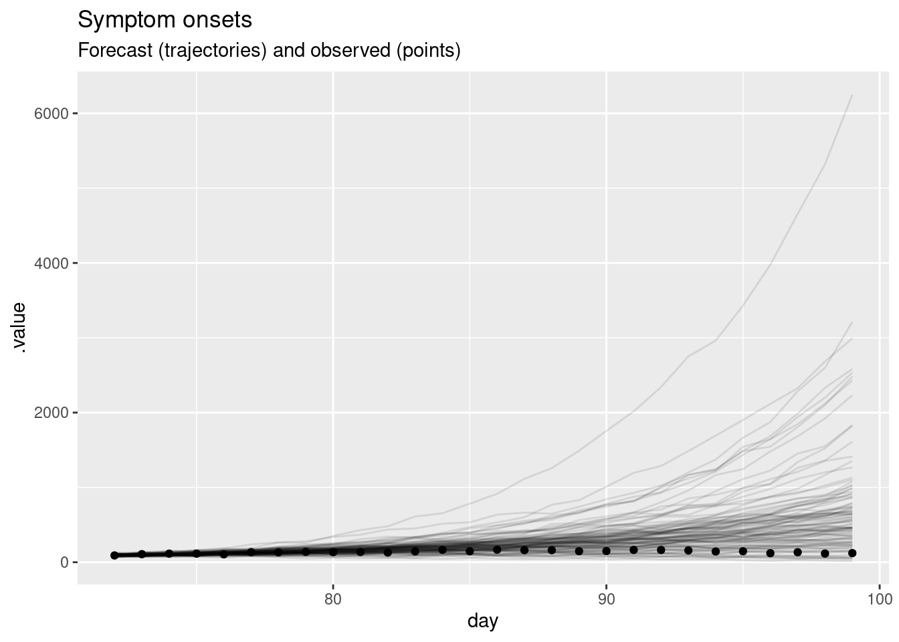
What do you think of this forecast? Did the model do a good job? Is there another way you could visualise the forecast that might be more informative?
forecast |>
filter(.draw %in% sample(.draw, 100)) |>
ggplot(aes(x = day)) +
geom_line(alpha = 0.1, aes(y = .value, group = .draw)) +
geom_point(data = target_onsets, aes(x = day, y = onsets), color = "black") +
scale_y_continuous(trans = "log") +
labs(title = "Symptom onsets, log scale", subtitle = "Forecast and observed")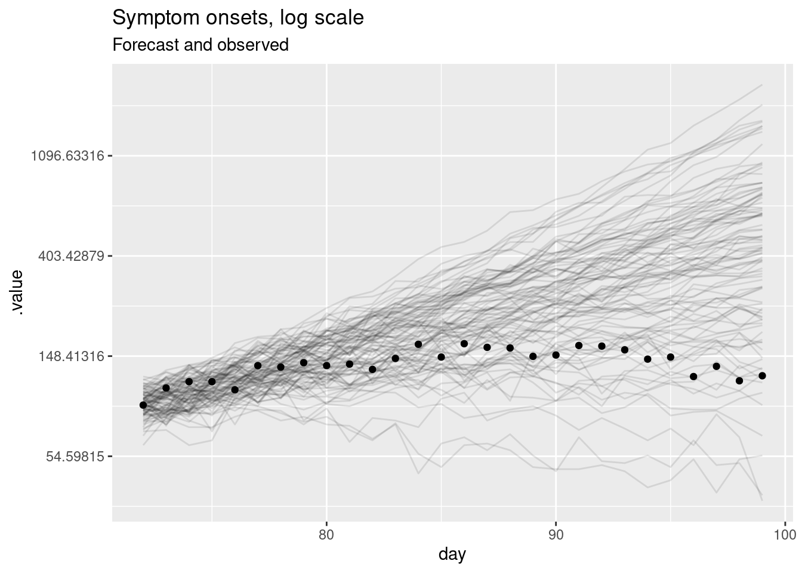
This should be a lot more informative. We see that for longer forecast horizons the model is not doing a great job of capturing the reduction in symptom onsets. However, we can now see that the model seems to be producing very reasonable forecasts for the first week or so of the forecast. This is a common pattern in forecasting where a model is good at capturing the short term dynamics but struggles with the longer term dynamics.
As our forecasting model is based on the reproduction number, we can also visualise the forecast of the reproduction number. This can be helpful for understanding why our forecasts of symptom onsets look the way they do and for understanding the uncertainty in the forecasts. We can also compare this to the “true” reproduction number, estimated once all relevant data is available. To do this, we will fit the model again but with a later cutoff. Then we can compare the reproduction numbers produced as forecasts at the earlier time, with estimates at the later time that used more of the data.
long_onset_df <- onset_df |>
filter(day <= cutoff + horizon)
long_data <- list(
n =nrow(long_onset_df),
I0 = 1,
obs = long_onset_df$onsets,
gen_time_max = length(gen_time_pmf),
gen_time_pmf = gen_time_pmf,
ip_max = length(ip_pmf) - 1,
ip_pmf = ip_pmf,
h = 0
)
rw_long <- mod$sample(
data = long_data, parallel_chains = 4, adapt_delta = 0.95,
init = \() list(init_R = 0, rw_sd = 0.01)
)We first need to extract the forecast and estimated reproduction numbers.
We can now plot the forecast and estimated reproduction numbers.
forecast_r |>
bind_rows(long_r) |>
filter(.draw %in% sample(.draw, 100)) |>
ggplot(aes(x = day)) +
geom_vline(xintercept = cutoff, linetype = "dashed") +
geom_hline(yintercept = 1, linetype = "dashed") +
geom_line(aes(y = .value, group = interaction(.draw, type), color = type), alpha = 0.1)+
labs(title = "Estimated R",
subtitle = "Estimated over whole time series (red), and forecast (blue)")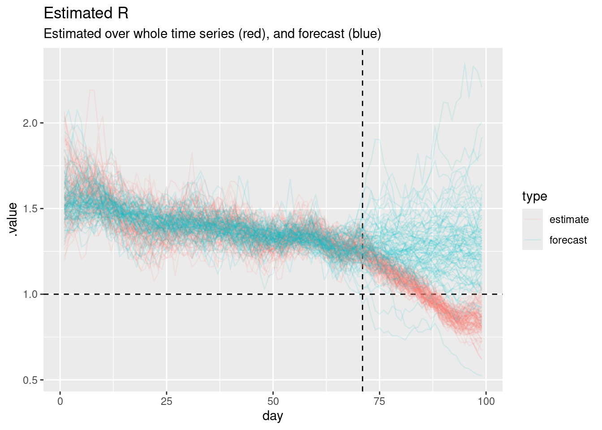
The horizontal dashed line at 1 represents the threshold for epidemic growth. If the reproduction number is above 1 then the epidemic is growing, if it is below 1 then the epidemic is shrinking. The vertical dashed line represents the point at which we started forecasting.
Can you use this plot to explain why the forecast of onsets looks the way it does?
We managed to learn quite a lot about our model’s forecasting limitations just looking at a single forecast using visualisations. However, what if we wanted to quantify how well the model is doing? This is where forecast evaluation comes in which we will cover in the next section.
An important aspect of making forecasts is that we can later confront the forecasts with what really happened and use this to assess whether our forecast model makes good predictions, or which of multiple models work best in which situation. In this section you will get to know several ways of assessing different aspects of forecast performance. You will then use them to evaluate your forecasts.
In order to properly evaluate forecasts from this model we really need to forecast over a period of time. Ideally, capturing different epidemic dynamics. This will also give us more to work with when using scoring metrics. We will now load in some forecasts we made earlier and evaluate them.
# A tibble: 224,000 × 7
day .draw .variable .value horizon target_day model
<dbl> <int> <chr> <dbl> <int> <dbl> <chr>
1 23 1 forecast 4 1 22 Random walk
2 23 2 forecast 2 1 22 Random walk
3 23 3 forecast 2 1 22 Random walk
4 23 4 forecast 6 1 22 Random walk
5 23 5 forecast 2 1 22 Random walk
6 23 6 forecast 3 1 22 Random walk
7 23 7 forecast 5 1 22 Random walk
8 23 8 forecast 2 1 22 Random walk
9 23 9 forecast 3 1 22 Random walk
10 23 10 forecast 5 1 22 Random walk
# ℹ 223,990 more rowsWe generated these forecasts using the code in data-raw/generate-example-forecasts.r which uses the same approach we just took for a single forecast date but generalises it to many forecasts dates.
Some important things to note about these forecasts:
As for a single forecast, our first step is to visualise the forecasts as this can give us a good idea of how well the model is doing without having to calculate any metrics.
rw_forecasts |>
filter(.draw %in% sample(.draw, 100)) |>
ggplot(aes(x = day)) +
geom_line(aes(y = .value, group = interaction(.draw, target_day), col = target_day), alpha = 0.1) +
geom_point(data = onset_df |>
filter(day >= 21),
aes(x = day, y = onsets), color = "black") +
scale_color_binned(type = "viridis") +
labs(title = "Weekly forecasts of symptom onsets over an outbreak",
col = "Forecast start day")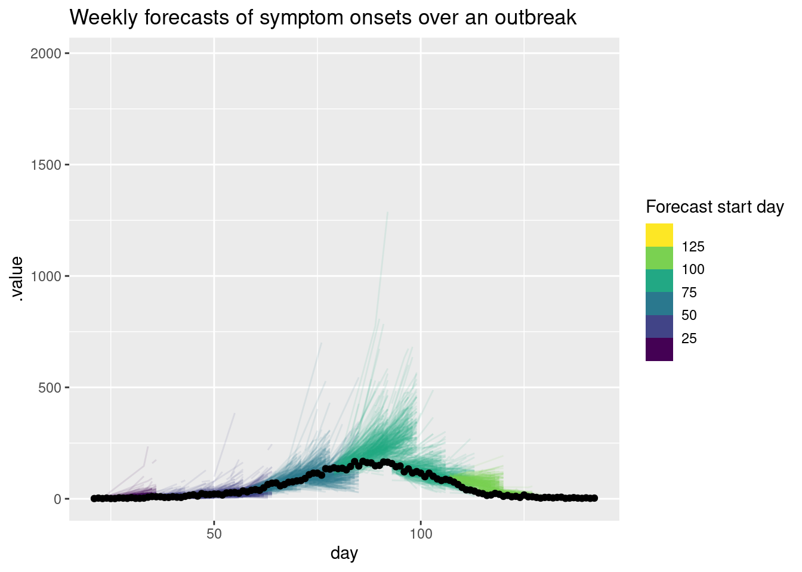
As for the single forecast it may be helpful to also plot the forecast on the log scale.
rw_forecasts |>
filter(.draw %in% sample(.draw, 100)) |>
ggplot(aes(x = day)) +
geom_line(aes(y = .value, group = interaction(.draw, target_day), col = target_day), alpha = 0.1) +
geom_point(data = onset_df, aes(x = day, y = onsets), color = "black") +
scale_y_log10() +
scale_color_binned(type = "viridis") +
labs(title = "Weekly symptom onset forecasts: log scale",
col = "Forecast start day")Warning in scale_y_log10(): log-10 transformation introduced infinite values.
log-10 transformation introduced infinite values.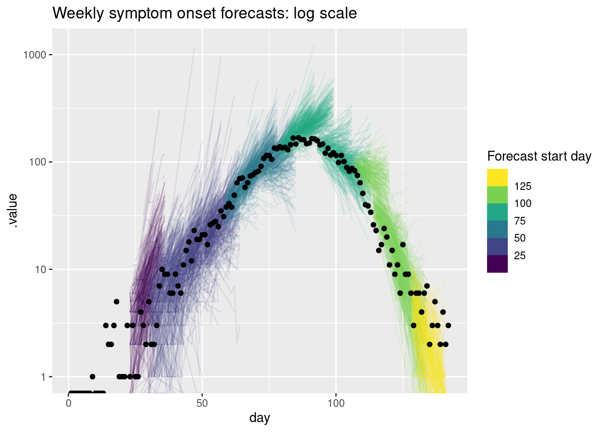
What do you think of these forecasts? Are they any good? How well do they capture changes in trend? Does the uncertainty seem reasonable? Do they seem to under or over predict consistently? Would you visualise the forecast in a different way?
What do you think of these forecasts? - We think these forecasts are a reasonable place to start but there is definitely room for improvement. Are they any good? - They seem to do a reasonable job of capturing the short term dynamics but struggle with the longer term dynamics. How well do they capture changes in trend? - There is little evidence of the model capturing the reduction in onsets before it begins to show in the data. Does the uncertainty seem reasonable? - On the natural scale it looks like the model often over predicts. Things seem more balanced on the log scale but the model still seems to be overly uncertain. Do they seem to under or over predict consistently? - It looks like the model is consistently over predicting on the natural scale but this is less clear on the log scale.
On top of visualising the forecasts, we can also summarise performance quantitatively by transforming them using scoring metrics. Whilst some of these metrics are more useful for comparing models, many can be also be useful for understanding the performance of a single model. We will look at some of these metrics in the next section.
In this session, we’ll use “proper” scoring rules: these are scoring rules that make sure no model can get better scores than the true model, i.e. the model used to generate the data. Of course we usually don’t know this (as we don’t know the “true model” for real-world data) but proper scoring rules incentivise forecasters to make their best attempt at reproducing its behaviour.
We will use the {scoringutils} package to calculate these metrics. Our first step is to convert our forecasts into a format that the {scoringutils} package can use. We will use as_forecast to do this:
sc_forecasts <- rw_forecasts |>
left_join(onset_df, by = "day") |>
filter(!is.na(.value)) |>
as_forecast(
forecast_unit = c("target_day", "horizon", "model"),
forecast_type = "sample",
observed = "onsets",
predicted = ".value",
model = "model",
sample_id = ".draw"
)
sc_forecastsForecast type: sampleForecast unit:target_day, horizon, and model
sample_id predicted observed target_day horizon model
<int> <num> <int> <num> <int> <char>
1: 1 4 1 22 1 Random walk
2: 2 2 1 22 1 Random walk
3: 3 2 1 22 1 Random walk
4: 4 6 1 22 1 Random walk
5: 5 2 1 22 1 Random walk
---
223996: 996 1 2 127 14 Random walk
223997: 997 0 2 127 14 Random walk
223998: 998 0 2 127 14 Random walk
223999: 999 1 2 127 14 Random walk
224000: 1000 0 2 127 14 Random walkAs you can see this has created a forecast object which has a print method that summarises the forecasts.
What important information is in the forecast object?
Everything seems to be in order. We can now use the scoringutils package to calculate some metrics. We will use the default sample metrics (as our forecasts are in sample format) and score our forecasts.
target_day horizon model bias dss crps log_score mad
<num> <int> <char> <num> <num> <num> <num> <num>
1: 22 1 Random walk 0.758 2.7770353 1.349424 2.101958 1.4826
2: 22 2 Random walk 0.202 1.9095371 0.552522 1.687439 2.9652
3: 22 3 Random walk 0.858 3.5962828 2.010624 2.499141 2.9652
4: 22 4 Random walk 0.885 3.9324993 2.376469 2.605082 2.9652
5: 22 5 Random walk 0.359 2.8247338 1.040579 2.199754 2.9652
---
220: 127 10 Random walk -0.914 5.3470953 2.627842 3.340293 1.4826
221: 127 11 Random walk -0.717 1.9337058 1.156866 2.208107 1.4826
222: 127 12 Random walk -0.510 0.9362237 0.586738 1.563904 1.4826
223: 127 13 Random walk -0.914 5.0039119 2.318689 3.239324 1.4826
224: 127 14 Random walk -0.637 1.1404519 0.774974 1.814469 1.4826
ae_median se_mean
<num> <num>
1: 2 5.731236
2: 1 0.831744
3: 3 11.410884
4: 4 16.378209
5: 1 3.667225
---
220: 4 11.329956
221: 2 2.515396
222: 1 0.527076
223: 3 8.265625
224: 1 0.948676Before we look in detail at the scores, we can use summarise_scores to get a quick overview of the scores. Don’t worry if you don’t understand all the scores yet, we will go some of them in more detail in the next section and you can find more information in the {scoringutils} documentation.
model bias dss crps log_score mad ae_median se_mean
<char> <num> <num> <num> <num> <num> <num> <num>
1: Random walk 0.190192 6.303572 13.35136 3.983245 18.2512 17.875 1502.309Before we look in detail at the scores, what do you think the scores are telling you?
The Continuous Ranked Probability Score (CRPS) is a proper scoring rule used to evaluate the accuracy of probabilistic forecasts. It is a generalization of the Mean Absolute Error (MAE) to probabilistic forecasts, where the forecast is a distribution rather than a single point estimate (i.e. like ours).
The CRPS can be thought about as the combination of two key aspects of forecasting: 1. The accuracy of the forecast in terms of how close the predicted values are to the observed value. 2. The confidence of the forecast in terms of the spread of the predicted values.
By balancing these two aspects, the CRPS provides a comprehensive measure of the quality of probabilistic forecasts.
For distributions with a finite first moment (a mean exists and it is finite), the CRPS can be expressed as:
\[ CRPS(D, y) = \mathbb{E}_{X \sim D}[|X - y|] - \frac{1}{2} \mathbb{E}_{X, X' \sim D}[|X - X'|] \]
where \(X\) and \(X'\) are independent random variables sampled from the distribution \(D\). To calculate this we simpley replace \(X\) and \(X'\) by samples from our posterior distribution and sum over all possible combinations.
This equation can be broke down into the two components:
Expected Absolute Error Between Forecast and Observation: \(\mathbb{E}_{X \sim D}[|X - y|]\) This term represents the average absolute difference between the values predicted by the forecasted distribution \(D\) and the actual observed value \(y\). It measures how far, on average, the forecasted values are from the observed value. A smaller value indicates that the forecasted distribution is closer to the observed value.
Expected Absolute Error Between Two Forecasted Values: \(\frac{1}{2} \mathbb{E}_{X, X' \sim D}[|X - X'|]\) This term represents the average absolute difference between two independent samples from the forecasted distribution \(D\). It measures the internal variability or spread of the forecasted distribution. A larger value indicates a wider spread of the forecasted values.
First Term (\(\mathbb{E}_{X \sim D}[|X - y|]\)): This term penalizes the forecast based on how far the predicted values are from the observed value. It ensures that the forecast is accurate in terms of proximity to the actual observation.
Second Term (\(\frac{1}{2} \mathbb{E}_{X, X' \sim D}[|X - X'|]\)): This term accounts for the spread of the forecasted distribution. It penalizes forecasts that are too uncertain or have a wide spread. By subtracting this term, the CRPS rewards forecasts that are not only accurate but also confident (i.e., have a narrow spread).
Whilst the CRPS is a very useful metric it can be difficult to interpret in isolation. It is often useful to compare the CRPS of different models or to compare the CRPS of the same model under different conditions. For example, lets compare the CRPS across different forecast horizons.
sc_scores |>
summarise_scores(by = "horizon") |>
ggplot(aes(x = horizon, y = crps)) +
geom_point() +
labs(title = "CRPS by daily forecast horizon",
subtitle = "Summarised across all forecasts")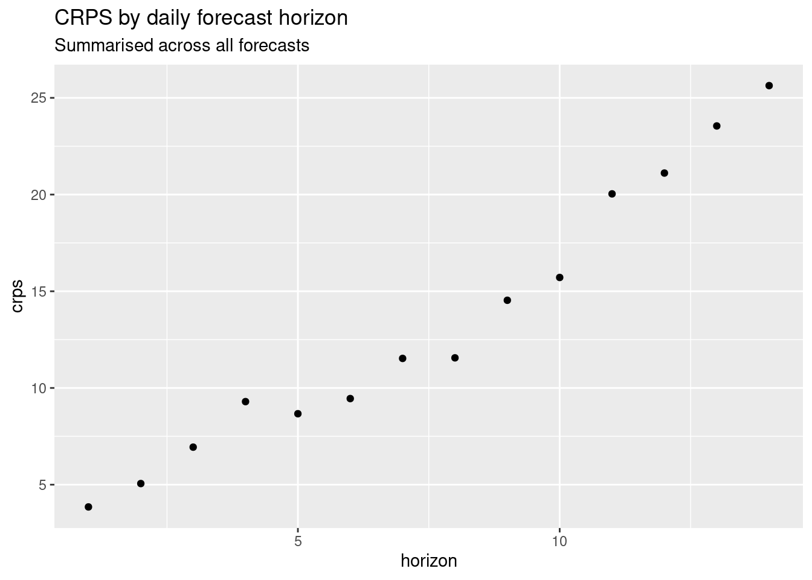
and at different time points.
sc_scores |>
summarise_scores(by = "target_day") |>
ggplot(aes(x = target_day, y = crps)) +
geom_point() +
labs(title = "CRPS by forecast start date",
subtitle = "Summarised across all forecasts", x = "forecast date")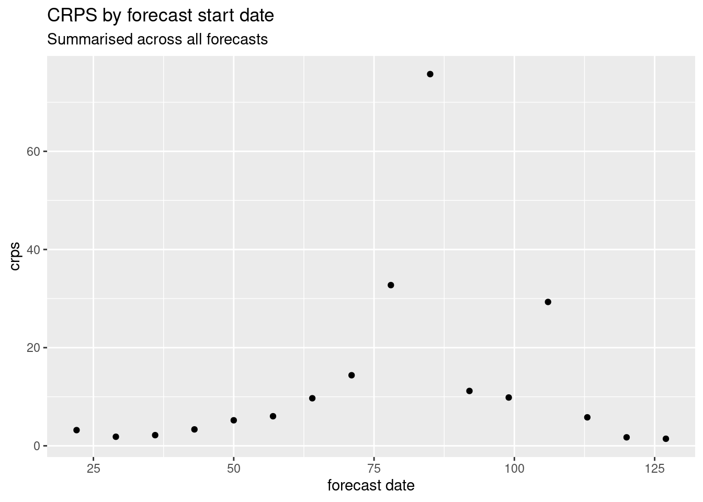
How do the CRPS scores change based on forecast date? How do the CRPS scores change with forecast horizon? What does this tell you about the model?
As well as the CRPS we can also look at the calibration and bias of the model. Calibration is the agreement between the forecast probabilities and the observed frequencies. Bias is a measure of how likely the model is to over or under predict the observed values.
There are many ways to assess calibration and bias but one common way is to use a probability integral transform (PIT) histogram. This is a histogram of the cumulative distribution of function of a forecast evaluated at the observed value.
For a continuous random variable \(X\) with cumulative distribution function (CDF) \(F_X\), the PIT is defined as:
\[ Y = F_X(X) \]
where \(Y\) is uniformly distributed on \([0, 1]\).
When dealing with integer forecasts, the standard PIT does not yield a uniform distribution even if the forecasts are perfectly calibrated. To address this, a randomized version of the PIT is used. For an integer-valued random variable \(X\) with CDF \(F_X\), the randomized PIT is defined as:
\[ U = F_X(k) + v \cdot (F_X(k) - F_X(k-1)) \]
where:
This transformation ensures that \(U\) is uniformly distributed on \([0, 1]\) if the forecasted distribution \(F_X\) is correctly specified.
Let’s first look at the overall PIT histogram.
As before lets look at the PIT histogram by forecast horizon. To save space we will group horizons into a few days each:
sc_forecasts |>
mutate(group_horizon = case_when(
horizon <= 3 ~ "1-3",
horizon <= 7 ~ "4-7",
horizon <= 14 ~ "8-14"
)) |>
get_pit(by = "group_horizon") |>
plot_pit() +
facet_wrap(~group_horizon) +
labs(title = "PIT by forecast horizon (days)")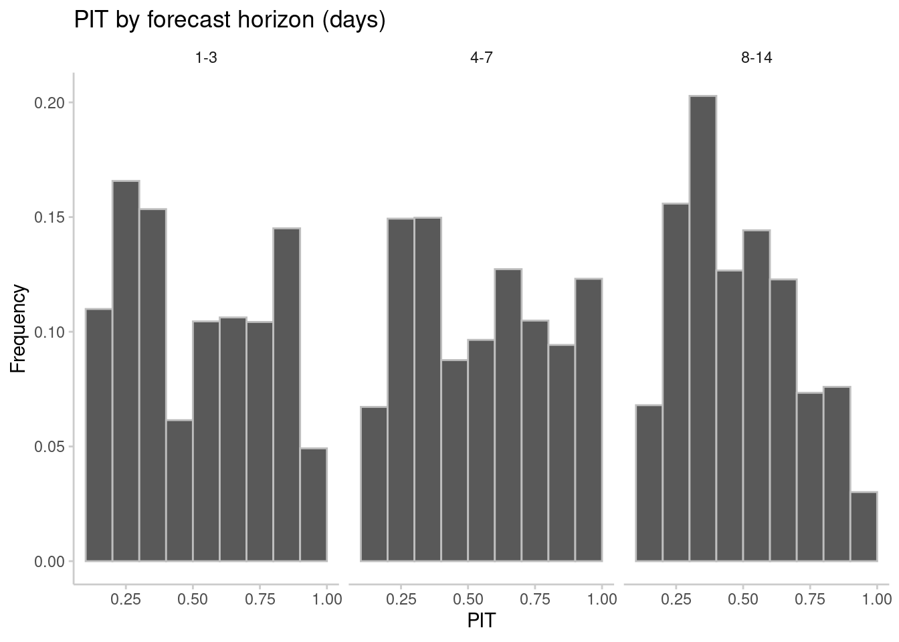
and then for different forecast dates.
sc_forecasts |>
get_pit(by = "target_day") |>
plot_pit() +
facet_wrap(~target_day) +
labs(title = "PIT by forecast date")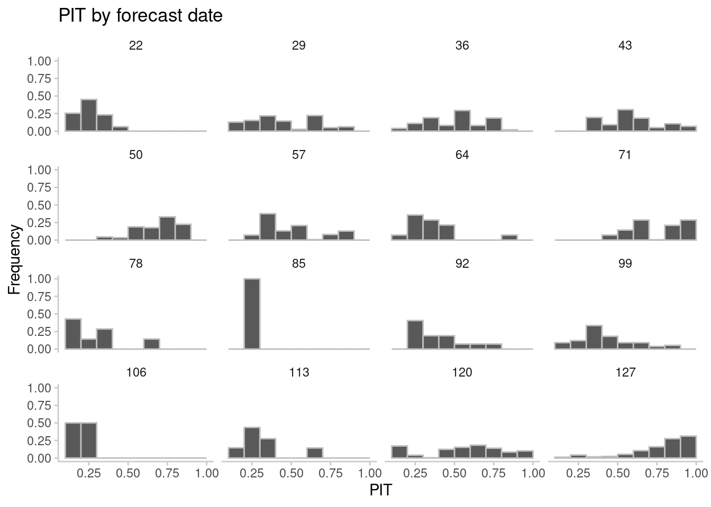
What do you think of the PIT histograms? Do they look well calibrated? Do they look biased?
We can also score on the logarithmic scale. This can be useful if we are interested in the relative performance of the model at different scales of the data, for example if we are interested in the model’s performance at capturing the exponential growth phase of the epidemic. In some sense scoring in this way can be an approximation of scoring the effective reproduction number estimates. Doing this directly can be difficult as the effective reproduction number is a latent variable and so we cannot directly score it.
We again use scoringutils but first transform both the forecasts and observations to the log scale. Note that we cannot log scale after scoring as this will give incorrect results.
For more on scoring on the log scale see Scoring forecasts on transformed scales.
model bias dss crps log_score mad ae_median
<char> <num> <num> <num> <num> <num> <num>
1: Random walk 0.152 -0.509457 0.2407813 0.6023975 0.3761217 0.3228824
se_mean
<num>
1: 0.1999966Before we look in detail at the scores, what do you think the scores are telling you? How do you think they will differ from the scores on the natural scale?
log_scores |>
summarise_scores(by = "horizon") |>
ggplot(aes(x = horizon, y = crps)) +
geom_point() +
labs(title = "CRPS by daily forecast horizon, scored on the log scale")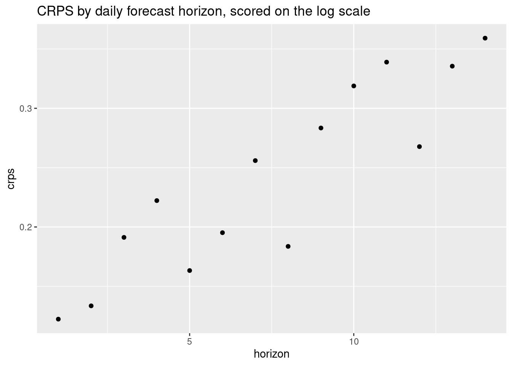
and across different forecast dates
log_scores |>
summarise_scores(by = "target_day") |>
ggplot(aes(x = target_day, y = crps)) +
geom_point() +
labs(title = "CRPS by forecast date, scored on the log scale")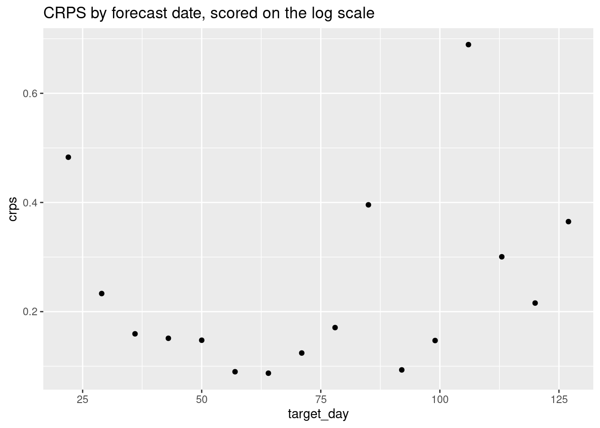
How do the CRPS scores change based on forecast date? How do the CRPS scores change with forecast horizon? What does this tell you about the model?
Let’s first look at the overall PIT histogram.
log_sc_forecasts |>
get_pit(by = "model") |>
plot_pit() +
labs(title = "PIT histogram, scored on the log scale")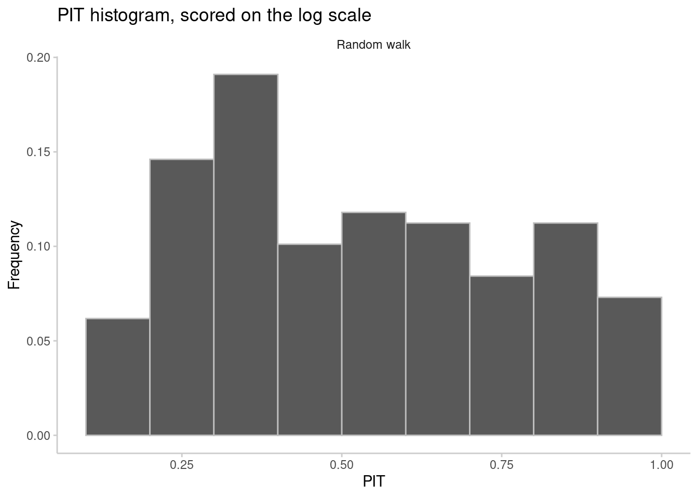
As before lets look at the PIT histogram by forecast horizon
log_sc_forecasts |>
mutate(group_horizon = case_when(
horizon <= 3 ~ "1-3",
horizon <= 7 ~ "4-7",
horizon <= 14 ~ "8-14"
)) |>
get_pit(by = "group_horizon") |>
plot_pit() +
facet_wrap(~group_horizon) +
labs(title = "PIT by forecast horizon, scored on the log scale")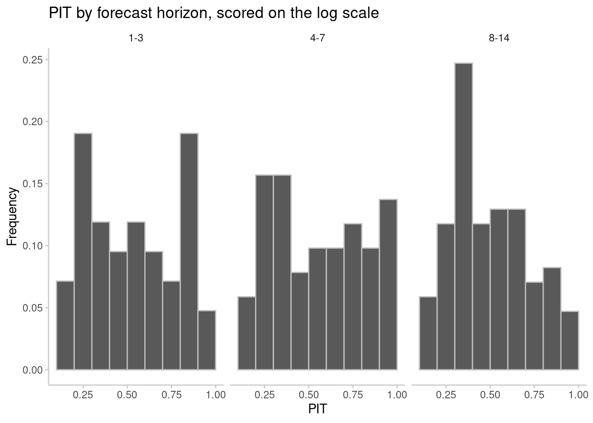
and then for different forecast dates.
log_sc_forecasts |>
get_pit(by = "target_day") |>
plot_pit() +
facet_wrap(~target_day) +
labs(title = "PIT by forecast date, scored on the log scale")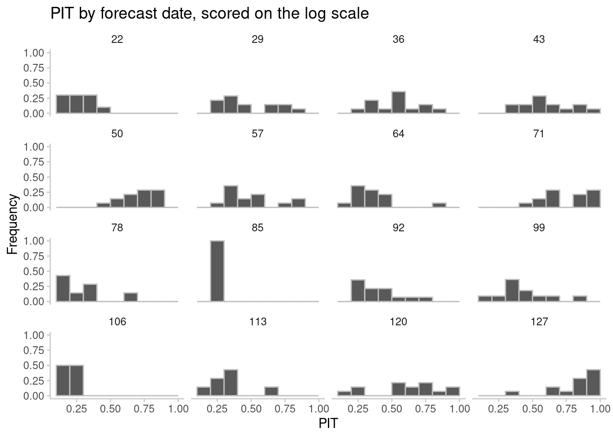
What do you think of the PIT histograms? Do they look well calibrated? Do they look biased?
{scoringutils} package has a good overview of these metrics and how to use them.